grok-4.6 · 30분 균일 · 공통 데이터(주문 34 / 상품 10 / 고객 10, sha 576ad596) + 상품 이미지 10장 · 데이터 충실도 감사(기대값을 감사 시점에 데이터셋에서 도출): KPI 집계 일치 · 34행 렌더 · delayed 필터=정확히 4건 · 상세 런타임 조인 · 미지 ID 정직 오류 · 하드코딩 탐지.
| arm | 일관성 | 데이터 충실도 (6항목) | 고유 결함 | 시간 | 비용* |
|---|---|---|---|---|---|
| Model only | PASS | O행수 X필터 O조인 O미지ID O상품 O비복사 | delayed 필터 미작동(19≠4) | 9.2분 | $0.92 |
| UI UX Pro Max | PASS | O행수 O필터 O조인 O미지ID O상품 O비복사 | — | 10.6분 | $1.33 |
| Hallmark | FAIL | O행수 O필터 O조인 X미지ID O상품 O비복사 | 주문총계 KPI 누락 · 미지ID 오류상태 없음 · h1 페이지간 표류 | 12.1분 | $1.38 |
| OmD Autopilot p7 | PASS | O행수 O필터 O조인 O미지ID O상품 O비복사 | — (조인은 수동검증 통과) | 15.8분 | $1.50 |
*OpenRouter x-ai/grok-4.6 $2/$6 per M
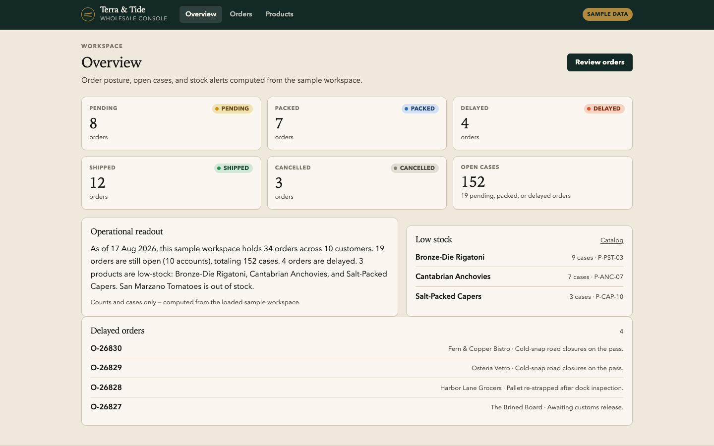
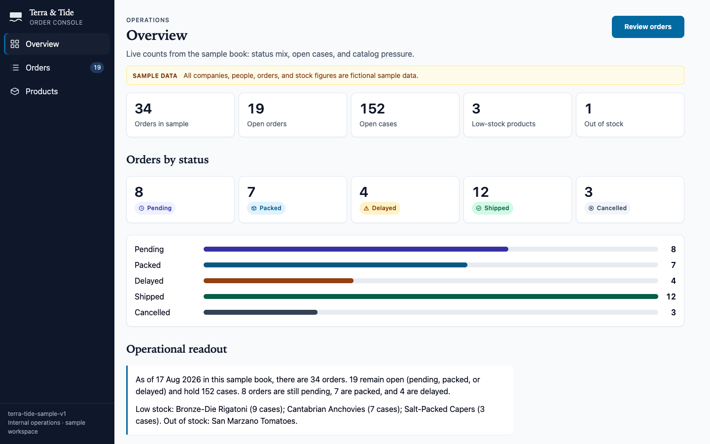
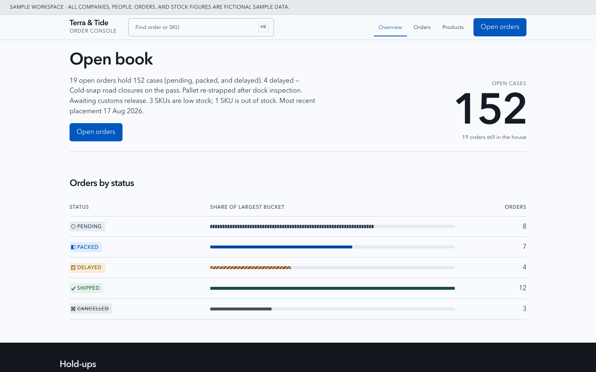
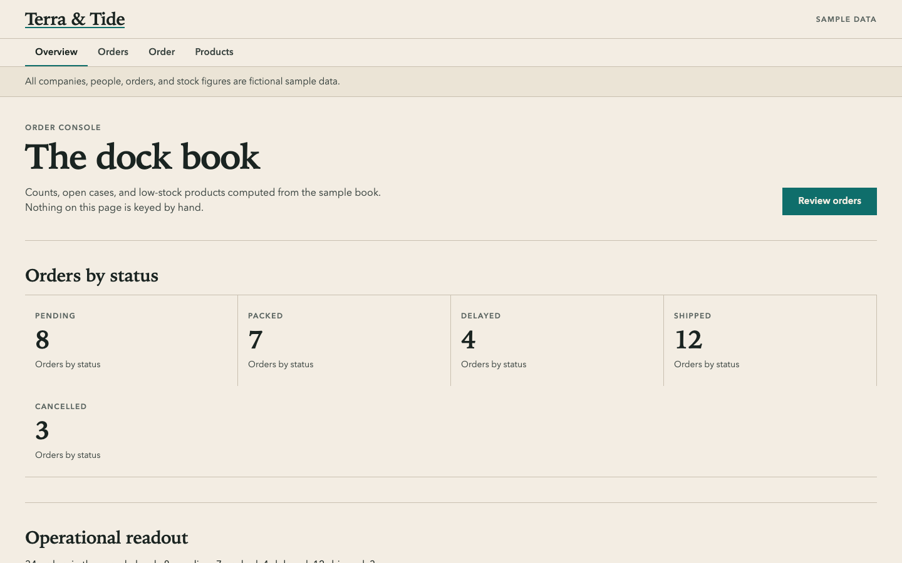
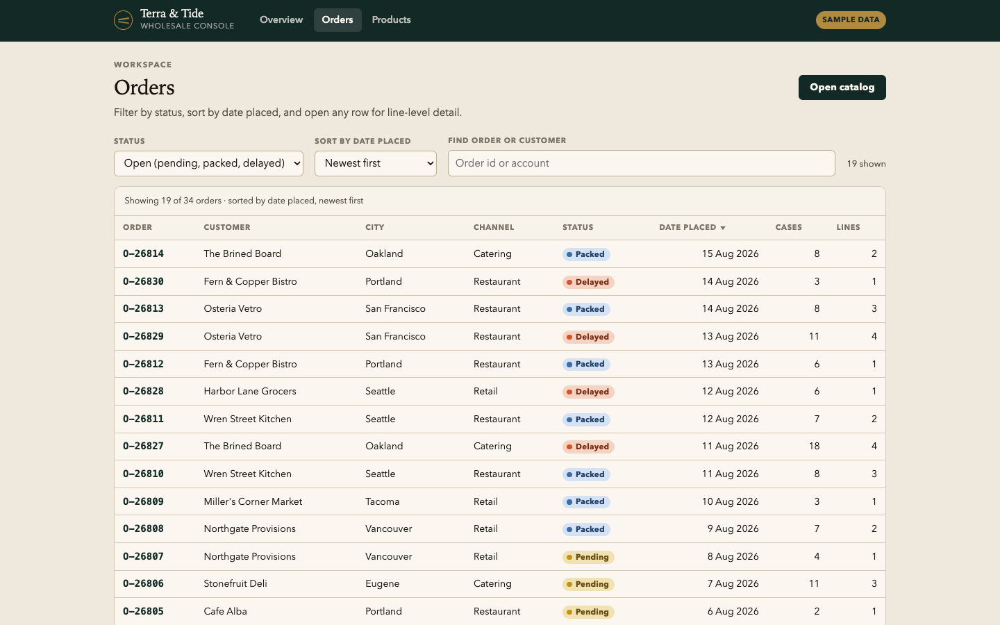
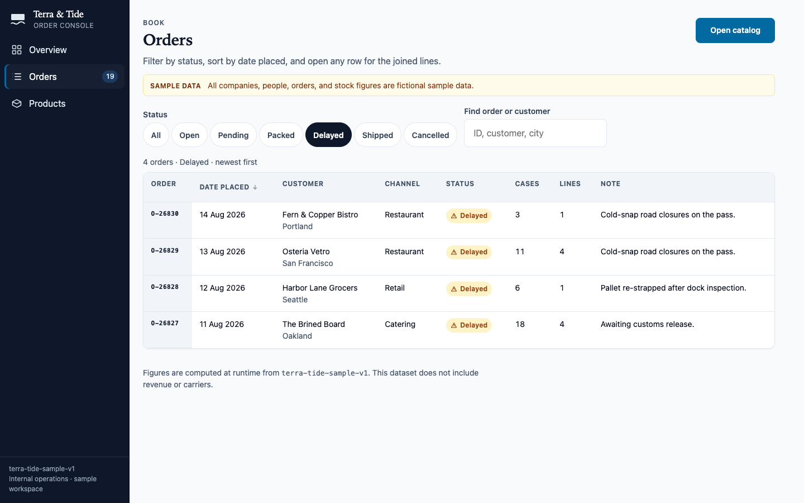
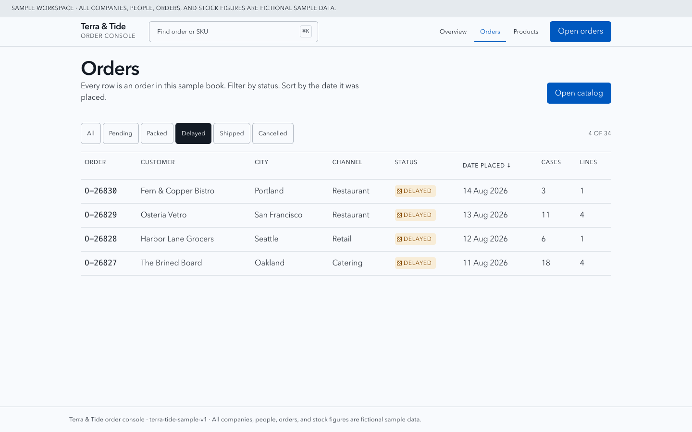
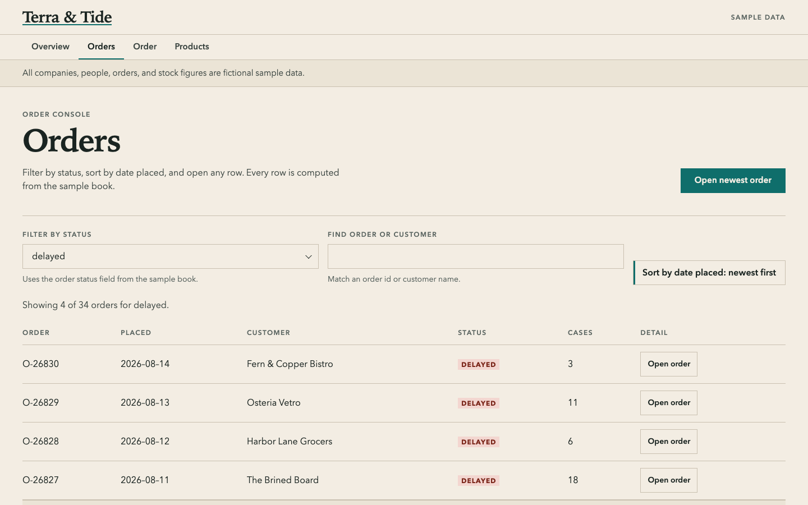
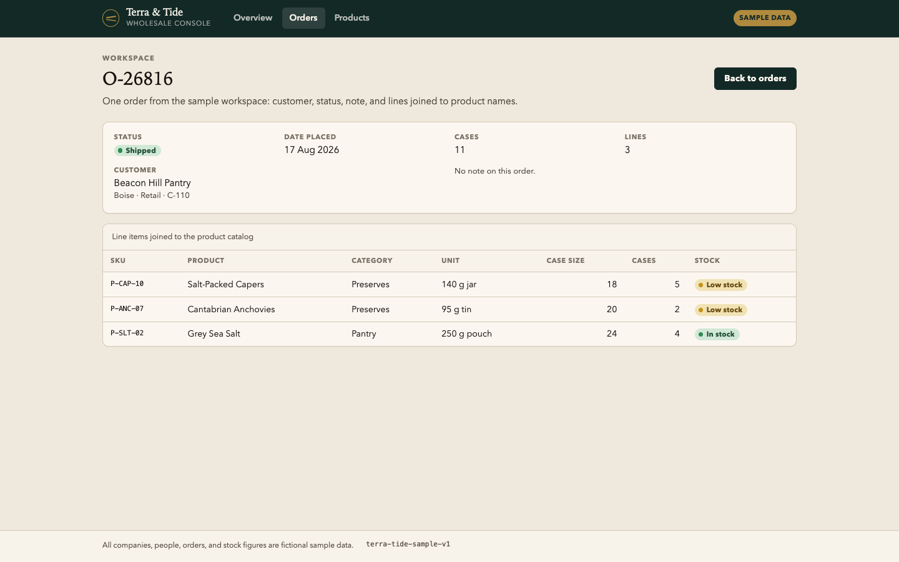
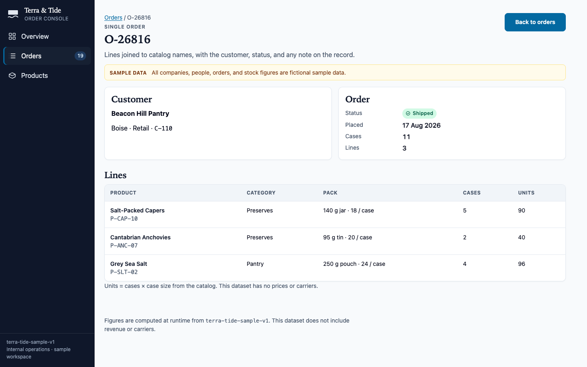
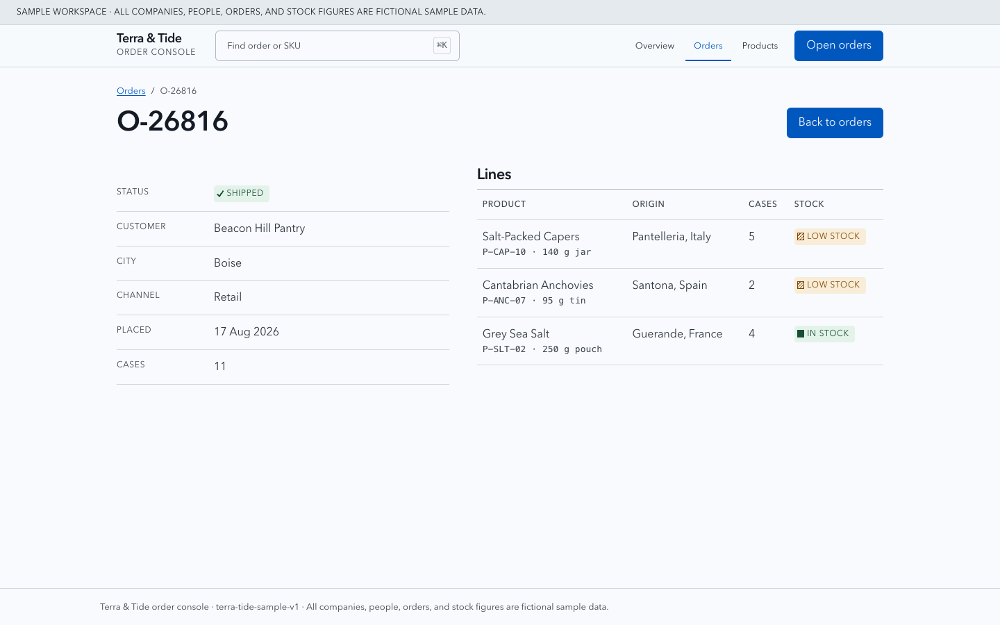